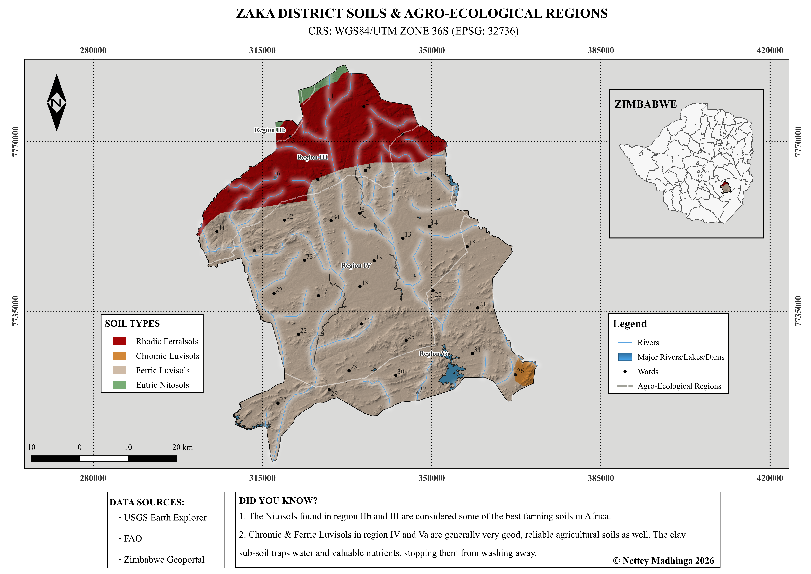

Zaka District Soils & Agro-Ecological Regions
Spatial overlay of FAO soil orders, Zimbabwe's Natural Farming Regions (IIb–Va), hydrological networks, and administrative wards.

Project Overview
Agricultural productivity in Zaka District depends heavily on the interplay between rainfall regimes and underlying soil fertility. This cartographic product integrates FAO pedological data with Zimbabwe's Agro-Ecological Regions and ward boundaries (Wards 1–34) to provide local extension officers and farmers with accessible spatial guidance.
Methodology & Data Integration
- Soil Classification Overlay: Harmonized FAO soil polygons projected in WGS 84 / UTM Zone 36S (EPSG:32736), distinguishing Rhodic Ferralsols, Chromic Luvisols, Ferric Luvisols, and Eutric Nitosols over shaded terrain relief.
- Agro-Ecological Zoning: Overlaid dashed regional boundaries delineating Region IIb and Region III in the higher-rainfall north from Region IV and Region Va across the central and southern wards.
- Hydrology & Ward Indexing: Mapped perennial rivers, dams, and numbered administrative wards so soil capability insights can be referenced directly at the ward level.
Agronomic Insights
Eutric Nitosols concentrated in Regions IIb and III rank among Africa's most productive agricultural soils, while the Chromic and Ferric Luvisols dominating Regions IV and Va possess clay-rich subsoils that retain moisture and nutrients during dry spells.